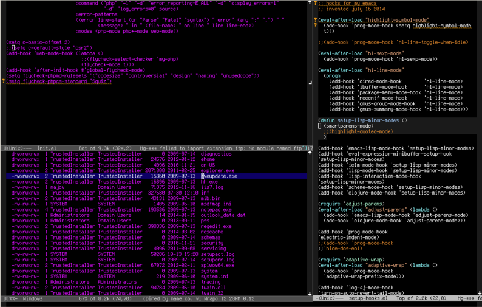
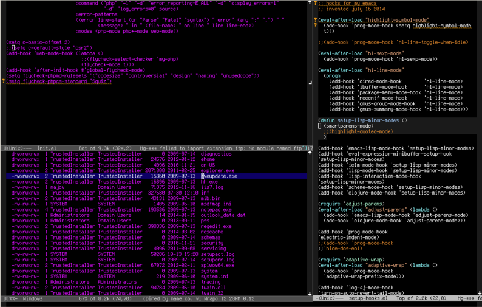

Dired Mode
Table of Contents
We will talk about dired mode and the features showing examples.
Dired mode
Dired mode offers so many cool stuff.
Dired Mode is writable
That means you can change name of any directory and file, and apply.

We will talk about dired mode and the features showing examples.
Dired mode offers so many cool stuff.
That means you can change name of any directory and file, and apply.
